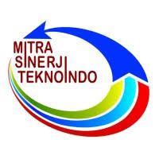

Experience

Bank Rakyat Indonesia
Quality Assurance Engineer
October 2023 - Present, Full-time Jakarta, Indonesia- Develop test automation scripts using tools such as Katalon Studio and Selenium.
- Conducting manual and automated testing to ensure software quality.
- Create automation scripts for web, mobile, and API applications.
- Generate bug reports and documenting test results.
- Collaborate with development and operations teams to ensure smooth technology integration.
- Conducting manual and automated testing, including SIT, UAT, and post-deployment testing, accompanied by detailed documentation.
- Develop custom scripts for generating PDF reports from automation test results.
- Conducting performance and stress testing using tools like JMeter or Locust.
- Integrate CI/CD pipelines to enhance testing process efficiency.
PT. Sinergi Informatika Semen Indonesia
IT Internal & Network
July 2022 - July 2023, Full-time Jakarta, Indonesia- Manage and maintain network infrastructure, including routers, switches, and firewalls.
- Create bug reports and document testing results.
- Performing data backups, system monitoring, and software updates.
- Install and configure security tools such as antivirus, firewalls, and threat detection systems.
- Set up and manage local area networks (LAN), wide area networks (WAN), and wireless networks (Wi-Fi).
- Coordinate with vendors or internet service providers (ISPs) in case of external disruptions.
- Utilize network monitoring tools (such as PRTG and Wireshark) to analyze network performance.
- Optimize bandwidth and manage Quality of Service (QoS) to prevent network congestion.
Radya Digital
Quality Assurance Engineer
March 2021 - June 2022, Full-time Bandung, Indonesia- Prepare test planning documents such as Test Plans, Test Scenarios, and Test Cases.
- Conducting manual and automated testing to ensure software quality.
- Develop automation scripts using tools such as TestComplete, TestProject, Katalon Studio, and Cypress.
- Generate bug reports and documenting test results.
- Collaborate with development and operations teams to ensure smooth technology integration.
- Conducting manual and automated testing, including SIT, UAT, and post-deployment testing, accompanied by detailed documentation.
- Develop custom scripts for generating PDF reports from automation test results.

PT Mitra Sinerji Teknoindo
PT Mitra Sinerji Teknoindo
Software Developer
July 2020 - February 2021, Full-time Bandung, Indonesia- Prepare technical documents such as the Software Requirement Specification (SRS).
- Collaborate with the UI/UX team to ensure an optimal interface design.
- Develop scripts using programming languages such as PHP and Java.
- Develop web-based applications according to project requirements.
- Utilize frameworks such as ReactJS (JavaScript), Laravel (PHP), or Flutter (Mobile) to accelerate development.
- Designing, developing, and managing databases using MySQL.
- Conducting code reviews with the team to ensure good coding standards.
PT. Len Industri (Persero)
Web Developer
April 2019 - June 2019, Internship Bandung, Indonesia- Prepare technical documents such as the Software Requirement Specification (SRS).
- Collaborate with the management team to ensure an optimal interface design.
- Develop scripts using the PHP programming language.
- Develop web-based applications according to management requirements.
- Utilize frameworks such as ReactJS (JavaScript) and CodeIgniter (CI).
- Designing, developing, and managing databases using MySQL.
- Conducting code reviews with the team to ensure good coding standards.